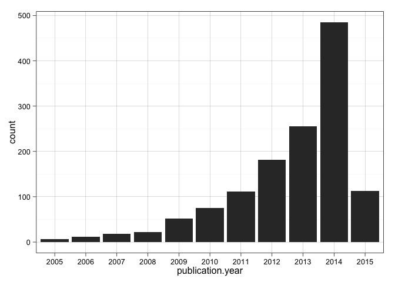
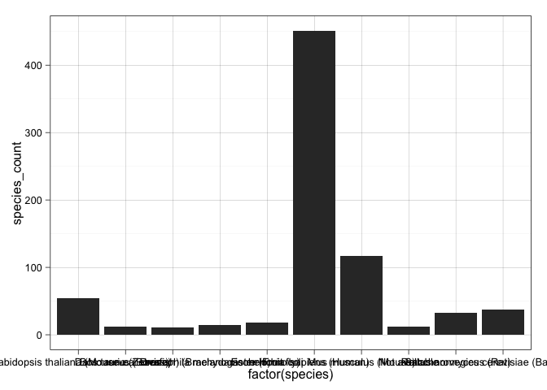

A view from the PRIDE Archive
Jose A. Dianes
20 March 2015
These are some of the libraries and configurations we will use in the following analysis.
require(devtools)
install_github("PRIDE-R/prideR")
library(prideR)
require(ggplot2)
theme_set(theme_linedraw())
require(dplyr)The two first parts are carried out in this document. The data visualisation part will be generated and published separatelly and referenced from here.
We will use the prideR package to retrieve data from all the submitted experiments up to date.
By using R, first we will prepare and explore data to be mined. Then we will
compute different summary statistics and generate some plots that will give us
some insight into the questions we want to answer in our visualisation.
For this data viz we will use Tableau. We will generate some worksheets for the key charts, and then we will put them together in an author-driven linear narrative that will go over time answering questions about MS2 proteomics research trends.
Using prideR, lets retrieve all the public datasets. We will use a large number as page size so we retrieve all of them.
all_projects <- search.list.ProjectSummary("",0,20000)
num_projects <- length(project.list(all_projects))This time we get 1331 projects in total. Lets convert the result object into a data frame, more suitable to work with the different R libraries.
all_projects.df <- as.data.frame(all_projects)
names(all_projects.df)## [1] "accession" "project.title" "project.description"
## [4] "publication.date" "num.assays" "species"
## [7] "tissues" "ptm.names" "instrument.names"
## [10] "project.tags" "submissionType"
Let's have a look at the publication dates.
str(all_projects.df$publication.date)## POSIXct[1:1331], format: "2015-03-19" "2015-03-19" "2015-03-19" "2015-03-19" ...
We see they are already in date format (POSIXct) and contain month and day. But we are just
interested in years in our study of trends, so let's extract the year in a separate
variable in the data frame.
all_projects.df$publication.year <- as.factor(format(all_projects.df$publication.date, "%Y"))
table(all_projects.df$publication.year)##
## 2005 2006 2007 2008 2009 2010 2011 2012 2013 2014 2015
## 6 12 18 22 52 75 112 181 255 485 113
We have a lot of information in that summary table. But let's put it visually.
ggplot(data=all_projects.df, aes(x=publication.year)) +
geom_bar()
Maybe we should exclude the present year from our trend analysis since the year is not complete and will incorrectly influence the outcomes.
all_projects_up2014.df <- subset(all_projects.df, publication.year!="2015")
num_projects_up2014 <- nrow(all_projects_up2014.df)There we are. We have a new dataframe with 1218 projects up to 2014. I think we are ready to start doing some Exploratory Analysis.
So we know how the number of publications has changed over the years. But we are also interested in what people research during these years. From the names in our data frame we saw that each project includes information regarding:
Let's first have a look at each of these variables as a whole, and later on we can group them by years.
species_table <- sort(table(all_projects_up2014.df$species), decreasing=T)
species_table_frequent <- species_table[species_table>10]
num_species <- length(species_table)
num_species_frequent <- sum(species_table>10)We see that we have up to 312 different species. But most of them are rare species that appear just once or twice. Just 10 of them have been submitted more than ten times. Let's plot them.
species_all_time <- data.frame(species=names(species_table_frequent), species_count=species_table_frequent)
ggplot(data=species_all_time, aes(x=factor(species), y=species_count)) +
geom_bar(stat='identity')